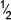
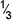
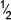
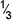

| Run | Propn of A x |
Propn of B z |
Propn of C u |
|
|---|---|---|---|---|
| Pure mixtures | ||||
|  |
Mixtures of 2 | |||
|  | Mixtures of 3 |
Design of experiment
For independently controllable factors, an important goal is for the factor levels to be orthogonal. This is not feasible for mixtures because the different proportions are related to each other — they sum to 1.0.
Instead, experimental designs for mixtures try to give an 'even spread' of design points over the experimental region. Two methods of creating such designs are described below.
Simplex-centroid design
The simplest design for k ingredients uses the following design points:
For example, with k = 3 ingredients, the simplex-centroid design has the following design points:
| Run | Propn of A x |
Propn of B z |
Propn of C u |
|
|---|---|---|---|---|
| Pure mixtures | ||||
|  |
Mixtures of 2 | |||
|  | Mixtures of 3 |
Simplex-lattice designs
This type of design involves a further constant, m which is often 3 or higher. The design points are:
For example, for k = 3 ingredients and m = 3, there are 10 design points:
| Run | Propn of A x |
Propn of B z |
Propn of C u |
|---|---|---|---|
Replicates
The above designs are usually conducted with some replicates.
Using replicates in the design has several advantages:
These will be discussed more fully later in this section.
Mixtures of three fruit juices
The diagram below shows how different mixture designs cover the experimental region for a mixture of three ingredients.
The design points for the simplex-centroid design are shown first. Click on any circle to read off the proportions for the 3 ingredients.
Select Simplex-lattice design from the pop-up menu. The design is initially shown for m = 2. Use the control to increase the value of m.
Observe that when m = 4, the design points are all mixtures containing multiples of 1/4 of each ingredient.